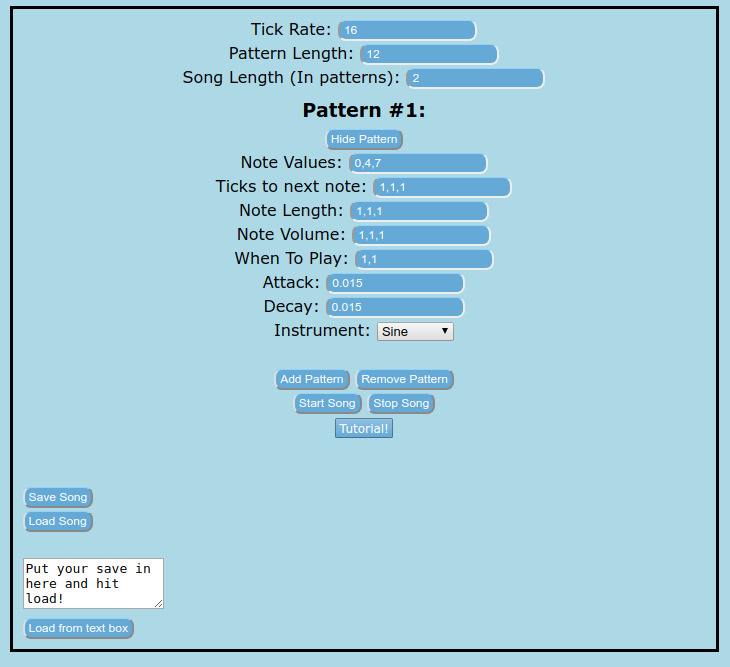

Hello and welcome to my “game” It’s called that cause it’s not really a game, it’s a tracker thingy? Anyways, I’m going to show you how to use it!

The first thing you’ll see is the Tick Rate. This defines how many ticks will happen in a second. What is a tick you ask? Well, It’s the internal clock that this program runs on. All units of time except for Attack and Decay are measured in Ticks.
Next is the Pattern Length. This is the time in ticks before we move on to the next pattern. The when To Play tells the program which part of the song to play that particular pattern. An interesting quirk with this program is that the total length in ticks of a pattern is completely independent of the Pattern Length. This means that if you have a small amount of total ticks in your pattern it will just loop forever. If the pattern stops playing because When To Play at that current time is set to zero. The pattern will simply continue on from where it left off.
The song length is just how many pattern lengths the song should play until it loops, so as not to iterate off any loops.
Now, there are two ways to input note values into this program. One way with numbers and the other with Note names. The note naming scheme is fairly straight forward. For example you have a C#4 for example. You would write into the box Cs4. The reason being because javascript doesn’t support having # symbols in variable names, and I can’t be assed to escape my inputs (Which means that you could probably find a way to define and manipulate variables to your advantage :0)
The three next values must have the same number of elements as Note Values. Ticks to next note is basically a countdown to the next note in ticks. Note Length is the length the note is held for before it tapers off in ticks and can be any positive number (even numbers bigger than Ticks To Next Note). The note volume is very straightforward with it simply being the volume of the current note. Although you can go higher than one it is not recommended as you could peak the volume.
The attack and decay numbers are instrument wide and are measured in milliseconds. The decay starts after the Note Length time is up and then will be completely tapered off by the end of the specified time.
The Add Pattern button will add an extra pattern and the Remove Pattern button will remove the last pattern added (There’s no warning so be careful!)
The start song button will start the song (duh) and the stop button will stop the song (duh). The tutorial button will take you here. (You clicked it so duh)
Now I’m pretty proud of this one. There’s a save button! It saves the song to local storage and you can retrieve the save with the load button. Also, when you press the save button it will copy your save to the clipboard for use on a different computer and there’s a text box for loading it later with the load from text box button. Anyway I’m so tired and sick of working on this I don’t think I can make a song with it so maybe some of you could make something while I take a well deserved rest… I did most of this the day before it was due. Including this wiki.